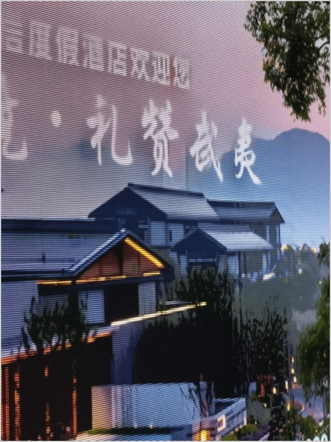
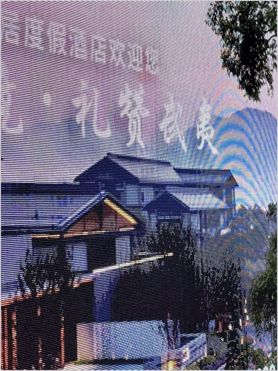
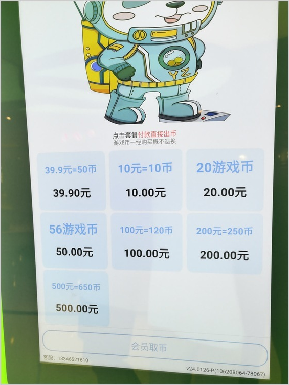
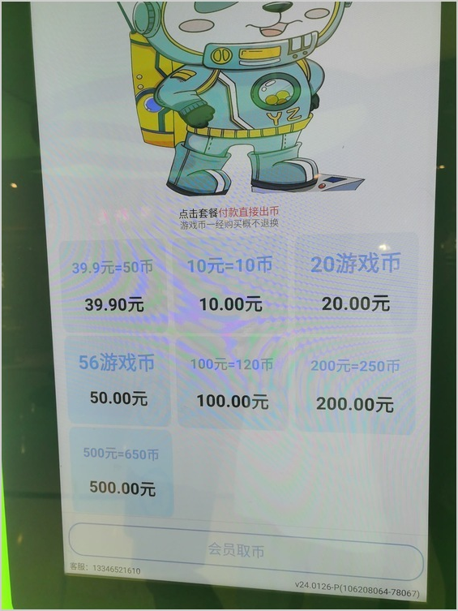
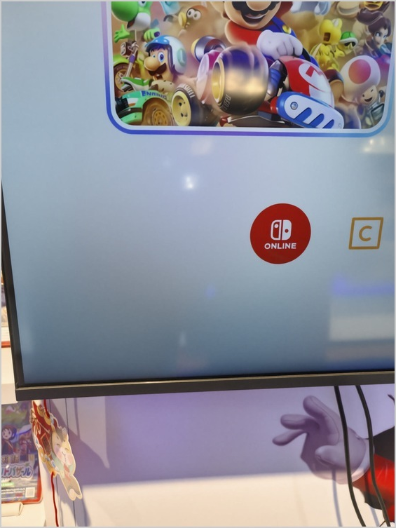
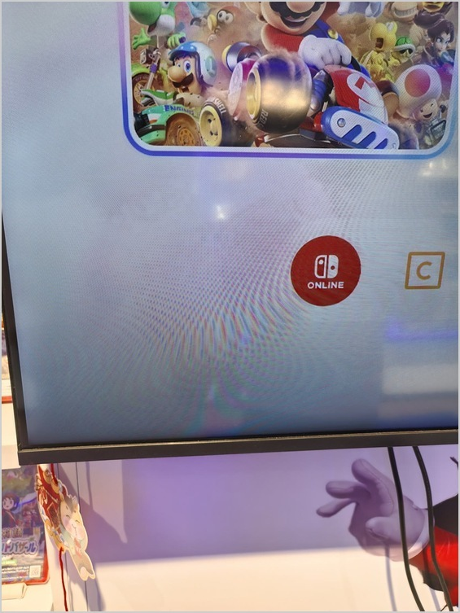

DemoiréEdit
Dual-Scale Condition-Shift Editing
for Robust Real-World Image Demoiréing
* Corresponding authors.
Real-world image demoiréing
Drag directly on each image to compare the input with our result. Use the arrow keys when focused.






Qualitative examples from Figure 8 of the paper.
Overview
Real-world screen photographs contain complex moiré patterns, from fine interference to broad color bands. We study image demoiréing through an image-editing prior, using dual-scale restoration and a change in image conditioning to combine global artifact removal with full-resolution refinement.
A first stage restores a reduced-resolution view. A second stage begins with the restored view as its image condition, then switches to the original capture to recover scene detail. The paper also introduces DailyMoiré130, a collection of 130 smartphone captures of everyday displays without aligned clean targets.
Method
Global restoration
Restore the image at a reduced resolution to address large-scale moiré patterns.
Condition shift
Begin full-resolution editing with the first-stage result, then switch conditioning to the original input.
Full-resolution output
Combine global restoration with the fine detail supplied by the original capture.
Editing may change color and fine detail. The examples above are reported paper results.
BibTeX
@misc{zhou2026dualscale,
title = {Dual-Scale Condition-Shift Editing for Robust Real-World Image Demoiréing},
author = {Shiyang Zhou and Haijin Zeng and Congpei Qiu and Zhengcen Li and Ping Chen and Xiangming Wang and Zheng Li and Yongyong Chen and Jingyong Su},
year = {2026},
note = {Manuscript},
url = {https://clausy9.github.io/DemoireEdit/}
}